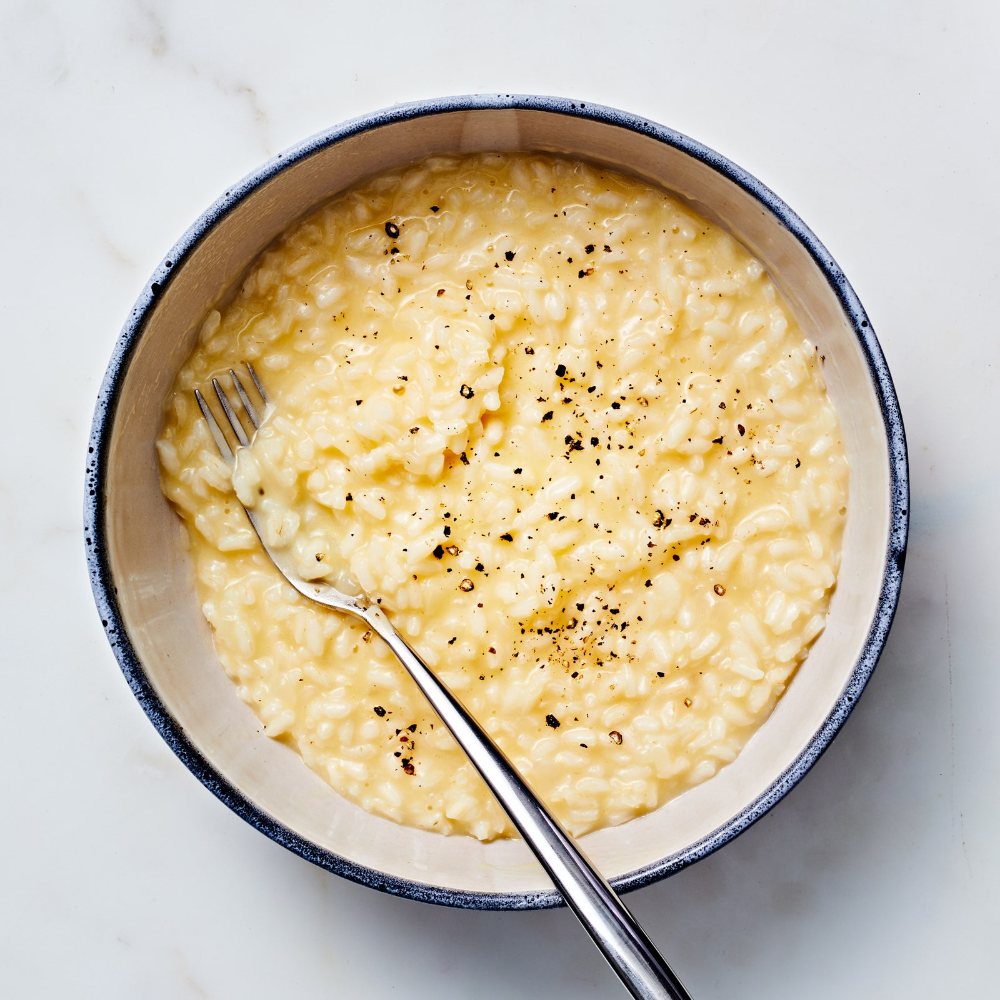

Risotto

Description
Description of the dish
Ingredients
- 6 cups low-sodium chicken stock, or vegetable stock
- 2 tablespoons olive oil
- 1 shallot, finely chopped
- 1 lb shiitake mushroom, stemmed and thinly sliced
- 2 tablespoons unsalted butter
- 2 cloves garlic, minced
- 1 teaspoon fresh thyme, finely chopped
- salt and pepper to taste
- 1 ½ cups arborio rice
- ½ cup white wine
- 1 cup grated parmesan cheese
- ¼ cup fresh parsley
Steps
- Add the stock to a medium pot and bring to a boil over high heat. Once the stock is boiling, reduce the heat to low or remove the pan from the heat and keep nearby.
- Heat the olive oil in a wide, tall pot over medium heat. Once the oil begins to shimmer, add the shallot and cook, stirring frequently, until translucent.
- Add the shiitake mushrooms and butter. Cook, stirring occasionally, until the mushrooms have cooked down.
- Add the garlic, thyme, salt, and pepper, stir, and cook for 1 minute, until the butter has melted and the garlic is aromatic.
- Add the rice and stir until fully coated in the mushroom mixture. Let the rice toast for 1-2 minutes, until fragrant.
- Add the white wine and cook until the wine has evaporated, stirring occasionally
- Add 1 cup (240 ml) of the hot stock and stir to combine. Cook, stirring frequently, until the stock is fully absorbed.
- Continue to add the stock, ½ cup (120 ml) at a time, stirring continuously, until the broth is fully absorbed, for 15-20 minutes. Depending on how fast the rice cooks, there may be leftover stock.
- Once the rice is al dente, remove from the heat. Add the Parmesan and stir to combine.Top with parsley, Parmesan, salt, and pepper.